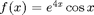
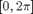
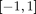
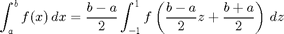

Math 340 - Lab #10 - Gaussian quadrature
Contents
Assignment due Thursday 2pm
Implement Gaussian numerical integration with nodes and weights for n = 2, 4, 6, 8 and find the approximate value of the integral of the following function:

on the interval

.Consult table 5.7 on page 223 of your textbook for the needed nodes and weights. Graph the approximate value of the integral versus n.
Make sure your domain of integration is the interval

. Use the following to transform your integral
clear all; clc % define n as a vector n = 2:2:8; % integration interval a = 0; b = 2*pi; % function with change of variables f = @(x) ((b-a)/2).*exp(4.*(((b - a)/2).*x + ((b + a)/2))).*cos((((b - a)/2).*x + ((b + a)/2))); % heading for the table fprintf(' N Gaussian Quadrature \n') fprintf('================================\n') for i = 1 : length(n) % calculate and print results fprintf(' %2i %20.8e \n',n(i),gaussian(f,n(i))); end
N Gaussian Quadrature ================================ 2 3.06815126e+08 4 1.42030305e+10 6 1.91514747e+10 8 1.93491709e+10
Example: code for n = 2
clear all, clc
f = @(x) x.^2;
n = 2;
Integral = gaussian2(f,n)
Integral =
0.6667